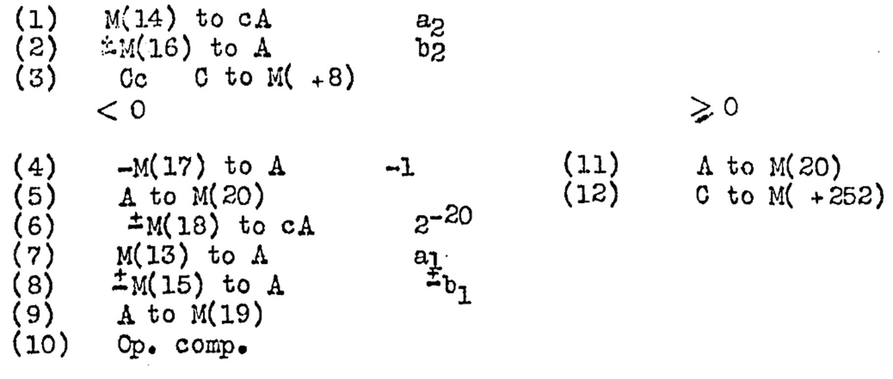

Slides © Grant Williams, CC BY-SA 4.0.
This is an open educational resource. Feel free to submit fixes, improvements, and new material here.
This class is about programming languages
Those things we use to write computer programs.
Specifically, it’s about: - Programming paradigms: the different ways that programming languages see the world. - Language design: how to actually design and implement a programming language from scratch - Functional programming: the programming paradigm that is very popular now in the industry, but which many of you have not ever used before. - Haskell: the specific functional programming language we will be learning
I am a teaching professor here
I used to work at Microsoft as a data scientist and software engineer.
Before that, most of my research focused on automated requirements engineering.
However, I have published a workshop paper in which I created a programming language (Copper). Programming languages have always been of interest to me.
At this point, you’ve learned a few languages: - You’ve had computer org, so some assembly experience. Maybe C and assembly, so some C. - You may have had systems programming: more C. - Some of you had CS 220, which teaches Typescript. - Those of you who started here: Python was the language of CS 122. - You may have also learned Java for algorithms and data structures. - Transfer students may have had C++ at clark.
So that’s like 5, right off the bat.
Now that you’ve had the experience of learning a bunch of languages, you’re probably starting to realize that learning a new language is kind of…I don’t want to say “automatic”, but…
Like, you know what questions to ask: - How do I make a variable? - How do I make a class/struct? - How do I make a function? - How do i do a loop?
The reason for this isn’t that all of computing can be reduced to those concepts, and that all languages are basically the same.
The reason is actually that all the languages you’ve learned have been imperative paradigm languages, with varying degrees of object-orientation.
They’ve all been the same kind of language. There are radically different ways that programming can work. And as someone who uses them reasonably often, IMO they’re just as good.
But before we go too deep, let’s talk about how class is going to work…
This is a learning mastery class. That means there will be several things that you need to demonstrate (mastery elements) to pass.
Each one is worth a chunk of your final grade.
However, even though they will all be tested in in-class quizzes, I will give you two retakes for each one.
Therefore, there will be 3 opportunities to demonstrate each mastery element.
I will take the maximum score of all of these to determine what you make on the mastery element.
Each mastery element will have one quiz focused on that element.
There will be six quizzes in total, and each will be 15 minutes long.
If you get a 100% on all the quizzes, congratulations, you don’t need to show up at the midterms or the final.
There will be a “midterm” and an “endterm” exam.
Each one will just be three mastery problems stapled together.
It’s not really an exam, it’s just a retest opportunity. There will be 3 new problems.
There’s a final too. It’s going to have problems for all six mastery elements stapled together.
If you get a 100% on mastery element 1, a 0% on mastery element 2, and a 50% on mastery element 3, you will want to take the midterm.
When you do, you can skip problem 1. It’s just going to be a re-take opportunity for ME 1, which you have already gotten a 100% on so you can’t improve.
However, it will be an opportunity to improve on ME 2 and 3.
If you still need an opportunity, you can take the final. It will have all six.
If you’re happy with your grade, you can skip the final. Therefore, the exams and final are optional. They are just retake options that are made universally available.
You can also skip the quizzes and take the midterm, or even skip everything except the final.
The latter is a bad idea: if you miss everything, I can’t give you an incomplete grade for the class, because you haven’t attempted 70% of it. You would fail unless you could obtain a withdrawal (or medical withdrawal)
We will mainly be using The Haskell Wikibook.
It’s an open educational resource, and it’s excellent. Easily as good as a regular pay book.
Whenever I assign readings, be sure to do all the exercises.
Another good one is Learn You a Haskell for Great Good. There’s a free online version. This used to be the main textbook, but the main issue was that the harder chapters didn’t have any unworked practice problems, only problems that were worked inline.
Still highly recommended, and also free.
What is a language?
According to Wikipedia: “a structured system of communication”
I like this definition. If a communication system doesn’t have structure, it’s hard to call it a language
Structure here means grammar: a set of rules for building complex thoughts out of groups simple ones.
Crows communicate by caw-ing, but I haven’t heard evidence that crow communication supports nested sub-clauses or grammar.
Nested sub-clauses? That’s what makes human languages rich.
Humans can nest clauses inside of clauses: “I thought that he liked that he wasn’t having to work nights.”
“I thought that ( he liked that ( he wasn’t having to work nights. ) )”
In academia, we put languages into 2 categories: human and formal.
A human language is spoken by humans. There are two sub-categories of human language: 1. Natural: the language evolved over time 2. Constructed: someone invented the language intentionally
Most human languages are natural languages.
However, there are some human languages that are not natural. They are called “constructed languages” or “conlangs” for short. [Can anyone name some?]
In contrast to human languages, formal languages are created by specifying precise grammar rules with no room for ambiguity.
With formal languages, we can say that a phrase is “valid” or “invalid”.
There’s no “mostly understandable but confusing” like with human languages.
Instead, we follow rules precisely.
This is an exhaustive syntax of the C programming language.
It contains all the information needed to determine whether a given string of letters is a valid C program or not.
This is called “syntax”
Note: it does not tell you how to execute that language or what it means (that’s called “semantics”), only whether it’s a C program.
We’ll talk more about how to read this grammar later in the course, but notice how much smaller it is than a book on English grammar.
This is strange to think about, but programming is older than programming languages
Programmers still had to use language to describe their programs, but the language they used was not specifically for programming.
Many of them used mathematical formalisms instead.
The first computer programmer was Ada Lovelace (Augusta Ada King)
She wrote the first computer program “Note G”, which explained how to generate the Bernoulli numbers on Babbage’s analytical engine.
Notice that it’s just a table. Each operation is on one row. Each operation is identified by its mathematical operation, the variables it acts upon, and the variable results
It’s like assembly language but using mathematical notation. Notice that some steps are bracketed: these can be repeated
The first formal language specifically made for writing programs is probably Plankalkül
Developed in the mid 1940’s by Konrad Zuse, the first person (known) to have built a working mechanical computer.
He was working for the bad guys during WW2: he was funded by the German government to develop computers (one was used to develop the guidance mechanism of the Hs 293 and 294 radio guided missiles).
His prototype computers got blown up by Allied bombers several times.
However, his programming language, developed for his computers, survived as an influence on ALGOL (another influential programming language).
Plankalkül had several unique features: - Only one primitive datatype: the bit - Bits could be grouped together into sequences or records for complex types - It used two-dimensional notation - Invented the assignment operator (he used → for it)
By our standards, Plankalkül seems strange.
Especially the 2D notation. But recall: Lovelace’s program was also tabular.
However, it was revolutionary for introducing the concept of a specialized formal language for describing computer programs.
Plankalkül was not implemented by Zuse. It wasn’t actually implemented until decades later by hobbyists.
Plankalkül was a “high level” programming language.
High level means that you don’t need to know all the details of the computer to write code in it. Instead, you use a standardized set of operations that the programming language specifies.
Someone may then implement a system that allows that high level code to run on an actual machine. (that system can be a compiler or interpreter for example, or even an algorithm for hand-compiling the program)
[do we know about compilers and interpreters?]
Oddly, the first low-level language actually came out after the first high-level language.
It was the assembly language for the automatic relay computer (ARC), developed by Andrew Booth and his assistants Kathleen Britten, and Xenia Sweeting (pictured right)

Assemblers take a list of instructions (often, assembly programs are called “listings” instead) and turn each one into machine code.
A compiler is a tool that turns code written for one language into another language (often assembly, but many compilers output to C or to a virtual language instead).
Sometimes people call it a “transpiler” if it translates from one high-level language to another. (e.g., Typescript refers to its compilation process in Javascript as “transpiling”).
Compilers are harder to write than assemblers: it wasn’t until the early 1950s that we started to see the first compiled languages.
Assembly language has a 1-to-1 or almost 1-to-1 correspondence between an operation in the language and an operation performed by the computer.
For example, if I write the x86 assembly instruction: “add eax, ecx”, that assembles to 1 machine opcode (which adds the ecx and eax registers together writing the sum to eax)
On the other hand, if I write in C: “x = x + y”, this could actually result in multiple instructions being generated (depending on whether the variables are in registers).
For example:
mov eax, [x]
add eax, [y]
mov [x], eaxOf course, that 1-to-1 definition is not hard and fast
Some assemblers support “macros”, which are custom instructions that can generate multiple instructions
For example, many assemblers support a “times” macro that performs an operation a certain number of times. This is not an instruction that the machine supports.
Therefore, it’s hard to really make a hard dividing line between high and low-level languages. I’ve even seen people use the term “high level assembly” for some assemblers, like this one.
Instead of a hard boundary between high-level and low-level languages, we often think of a continuum.
At the far left end are the lowest level languages: machine languages for different computers.
A little to the right are assembly languages. Then macro assemblers.
Then to the right of that are the simplest high-level programming languages. Plankalkül probably goes here.
As we go further to the right, we get more and more expressive features, and we have to write less and less code, but the result is “farther away” from the machine and therefore less predictable in how it will be implemented and how fast it will be.
The language continuum is not fast and hard vs. slow and easy.
Sometimes, a low-level language can have a feature that a high-level language doesn’t. For example, an assembly language with a true ‘mod’ instruction would make it easier to compute a possibly negatively indexed modulus than doing it in C.
Sometimes, a low-level language can be slower than a high-level language. If you are doing a ton of string comparisons for equality, a language with automatic string-interning, like Java or Python, will be faster.
The main distinction between low and high level languages is about how much control/interaction the language gives over hardware.
For example, a low level language lets you express exactly how a string comparison is done. Whether by byte-matching (raw comparison) or identity (interned comparison).
A low level language lets you choose where a value lives. In a register, on the stack, etc.
Normally the distinction makes only a small difference, but sometimes it matters. We need both low and high level languages.
When high-level programming languages were new, they weren’t actually very high level.
To our modern eyes, many of these languages look like they might as well be assembly. However, they often contained many helpful convenience features for common tasks.
Example: input/output. In assembly, it often involves writing special values to memory-mapped addresses or hardware ports.
Early high-level languages in the 50’s typically had some “print” or “read” equivalents that were cross platform and much easier.
The first commercially successful programming language is called FORTRAN. Developed by John Backus at IBM.
It stands for “FORmula TRANslating system”.
The idea was to let scientists write down formulas and run them instead of needing to translate them to assembly code.
For example: x = 20 * y + z + w is more natural than:
mov eax, [y]
mul 20
add eax, [z]
add eax, [w]
mov [x], eaxAs you might expect from a programming language introduced in the 50s, it’s very, very simple. There were no loops. There were no functions.
The “if” statement always had 3 branches: one for if the result of an expression was negative, one for zero, and one for positive.
So “if x < 20: do something” was actually written:
IF( X – 20 ) 20, 30, 30
20 do something
30 … program continues … Bizarre feature: you could give the Monte Carlo frequency of one of the branches so the compiler could give the most likely branches the best memory locations.
It was referred to as “old-fashioned” in a 1968 journal article*.
…yet, it is still widely used in the scientific/supercomputer community
It has a lot more features now than it used to. People aren’t still using the weird 3-branch if statement anymore.
It’s an extremely fast language. FORTRAN compilers used to regularly beat C compilers. It’s not so true today, but if you look at the fastest C programs on this site, most of them are basically assembly anyway:
(FORTRAN ties C in pi-digits computation)
*Kemeny, John G.; Kurtz, Thomas E. (11 October 1968). “Dartmouth Time-Sharing”. Science. 162 (3850): 223–228. Bibcode:1968Sci…162..223K. doi:10.1126/science.162.3850.223. PMID 5675464
Designed by Rear Admiral lower-half Grace Hopper
One of her goals was to make a compiler for a language that seemed as “English-like” as possible.
The idea was to make it easy for business logic to be programmed (requiring less formal language expertise).
She developed a language called B-0 (business language 0), later renamed FLOW-MATIC
(0) INPUT INVENTORY FILE-A PRICE FILE-B ; OUTPUT PRICED-INV FILE-C UNPRICED-INV
FILE-D ; HSP D .
(1) COMPARE PRODUCT-NO (A) WITH PRODUCT-NO (B) ; IF GREATER GO TO OPERATION 10 ;
IF EQUAL GO TO OPERATION 5 ; OTHERWISE GO TO OPERATION 2 .
(2) TRANSFER A TO D .
(3) WRITE-ITEM D .
(4) JUMP TO OPERATION 8 .
(5) TRANSFER A TO C .
(6) MOVE UNIT-PRICE (B) TO UNIT-PRICE (C) .
(7) WRITE-ITEM C .
(8) READ-ITEM A ; IF END OF DATA GO TO OPERATION 14 .
(9) JUMP TO OPERATION 1 .
(10) READ-ITEM B ; IF END OF DATA GO TO OPERATION 12 .
(11) JUMP TO OPERATION 1 .
(12) SET OPERATION 9 TO GO TO OPERATION 2 .
(13) JUMP TO OPERATION 2 .
(14) TEST PRODUCT-NO (B) AGAINST ; IF EQUAL GO TO OPERATION 16 ;
OTHERWISE GO TO OPERATION 15 .
(15) REWIND B .
(16) CLOSE-OUT FILES C ; D .
(17) STOP . (END)The idea behind FLOW-MATIC was accessibility
It was a language focused on the needs of the business community; it was intended to be used by people who weren’t computer scientists.
It was noticed by computer scientist Mary K. Hawes at Burroughs Corporation (an IBM competitor) who wanted to create a common business programming language.
Mary Hawes invited Grace Hopper to work on the spec. Grace Hopper suggested petitioning the department of defense for funding.
They did so, and the resulting committee created COBOL.
According to Hopper, COBOL was 95% FLOW-MATIC.
Notice that the code reads more like a process than we’re used to.
There’s isn’t a lot of hierarchical organization (if any).
Instead there’s a lot of “jump to operation X”.
This is true of both FORTRAN and COBOL.
The developer workflow as very different in those days. People would often start programming by writing a flow-chart.
The flow-chart would then be converted to code. Each line was a goto. Each split was a branch.
Interestingly, this made it fairly easy to write even assembly too. Starting with a flowchart is straightforward.
The problem is going backwards. It’s tedious to edit the program to change the control flow.
The solution to this was “structured programming”. We’ll talk about it soon.
Quick note: both FORTRAN and COBOL are associated with punchcards
You might be imagining someone punching holes in them manually.
In actuality they were just a way of storing text.
You would type your program on a terminal, hit the print button, and the punchcards would be printed out.
You would hand that stack to an operator.
Don’t drop it!
A major development in programming languages around this era was the concept of a “procedure”
If you’re familiar with C functions, you already know about procedures (because a C function is a kind of one).
A procedure is just a block of code that can be re-used by “calling” it.
Procedures aren’t exactly the same thing as functions in some languages though: procedures have side effects. They change memory or input/output when you call them.
Some language differentiate between procedures and functions (e.g., BASIC). Procedures have no return value.
Procedures are a basic unit of program “composition”
Composition means building a complex program from simpler ones.
It’s hard to imagine writing code by copy-pasting to re-use (although I do know programmers who make this work, even in a professional environment. Snippet managers are a thing.)
In assembly, where “functions” do not exist, you can re-use a block of code by saving your current location, moving arguments to a pre-defined place, jumping to the code, and then having that code jump back when it’s done.
The challenging part here is negotiating between the code being called and the calling code.
They both need to agree on a “calling convention”, which is a set of rules about where arguments and the return location are stored.
The calling convention is an important part of the “Application Binary Interface” (ABI), which describes how binary code modules interact with one another.
This is surprisingly complex, and you can see why the earliest programming languages didn’t really break a lot of ground here.
Procedures are also an interesting case in the cost of abstraction
“Abstraction” means making code more general. A procedure is more abstract than a random blob of code, because the procedure is more likely to be useable from anywhere (whereas the blob of code might need to have variables pre-defined for it, etc.).
Abstraction also means simpler, and less specific. A function is just a mapping between input and output values. It lets you ignore what’s inside.
However, to call a procedure, there’s a bunch of work we have to do that may be unnecessary (moving arguments to specified locations might force us to duplicate data redundantly for example)
One of the major innovations that started to take place around the 1960s was the use of structures in code.
What are structures?
Well, in C, all structures have curly braces after them (there are a couple of structures that don’t such as the ternary operator, but we’ll focus on the big ones).
That is, functions, if-statements, and loops are all structures.
Why does that matter?
The original idea behind structured programming was that each structure had only one entrance and one exit.
That means each structure had to be entered from the top: - You cannot jump from outside of a function into the middle of a function. - You cannot into a random branch of an if-statement without running the condition. - You cannot jump into a loop from outside the loop without first checking the guarded condition at the top.
These may seem like common sense now, but they were absolutely not required in assembly. A jump/goto can go anywhere, including into the middle of a function.
Originally, structures were supposed to only have one exit as well. So there was no “early return” idea.
Over time, structured programmers became comfortable with the idea of early returns and ifs with no elses (mostly), so this stopped being seen as a problem.
Only entering at one point was non-negotiable, however.
It may seems like common sense to not allow someone to jump into a random part of a function, but really think about why…
One reason is that it could violate the ABI. What if we remove 16 bytes from the stack at the end of the function, but the jumper didn’t push 16 bytes? Big problem.
But we can be careful and just not do that. The real issue is that random jumps mean that we cannot, just by looking at the code, establish invariants that let us know exactly which properties about it are true.
For example, if a function requires that arguments not be negative, it can check, at compile time or run time that this is the case. If we can jump into the function, we would bypass that check. So inside the function we lose the ability to know what’s true. We don’t know the state of the program.
This is a big word, we’ll be hearing it again and again.
State means, basically, the values in memory/registers. It can also include the values stored in external devices, like GPUs and hard drices.
The “state” of a program is the map of values to variables/registers/IO that are all relevant.
So if I change the value in a variable, I change that variable’s state.
Classic imperative programming allowed state to be changed in an unrestricted way. Different paradigms have different ways of managing it.
Structured programming was heavily motivated by dislike for GOTO/Jump
The famous Dijkstra essay “Go-to statement considered harmful” had a major impact on public perception.
Opening quote: “Since a number of years I am familiar with the observation that the quality of programmers is a decreasing function of the density of go to statements in the programs they produce.”
One of Dijkstra’s points is that humans are better at understanding static relationships than dynamic ones. And the complexity of a dynamic (code) process can be related to asking the question: suppose we stop at a random point in time. How much would we have to undo to reach a point where we could restart the program from that point?
That Lisp language we saw earlier does support structures. It has an equivalent to if, while, etc. However, it also supports unrestricted variable changes.
Here’s a language that is widely considered to have popularized the structured programming paradigm: ALGOL
The language was highly anticipated, but its committee had trouble agreeing on many things, and its implementations were delayed. However, its ideas were influential. See if you can recognize its syntax…
procedure Absmax(a) Size:(n, m) Result:(y) Subscripts:(i, k);
value n, m; array a; integer n, m, i, k; real y;
comment The absolute greatest element of the matrix a, of size n by m,
is copied to y, and the subscripts of this element to i and k;
begin
integer p, q;
y := 0; i := k := 1;
for p := 1 step 1 until n do
for q := 1 step 1 until m do
if abs(a[p, q]) > y then
begin y := abs(a[p, q]);
i := p; k := q
end
end AbsmaxYou can probably read that code without knowing the language.
ALGOL is probably the first langauge that “looks modern”.
We are very used to structured programming. It is so fundamental that we think of “if statements” and “while loops” as being the basic units of programming. It’s strange to think that they had to be invented.
But the real key to structured programming is more subtle than that: it’s those “begin” and “end” blocks.
The key behind structured programming is the idea that we can break code up into sequences of statements, called “blocks”, and use those as atomic units.
It’s not that we can’t jump into the middle of a function, a branch, or a loop. Its that all of those things require a block, and we cannot jump into a block.
In C, a block is between curly braces:
{ a(); b(); c(); }
Blocks can be nested:
if (something) {
a();
if (something else) { b(); c(); d(); }
}In Algol, blocks were between “begin” and “end”, but it’s the same idea.
Blocks can be nested.
We could think of the whole program as a kind of super-block. It might have function definitions inside of it.
Each function body is a block, which can have blocks inside of it: maybe loops, ifs, or local functions.
This tree-like organization, where each block “contains” child blocks, is often easier to understand than a giant list of instructions with little labels inserted every so often.
Nowadays, structured programming is so pervasive, we don’t really call a language a “structured programming language”.
However, probably all your favorite languages are structured (unless you love assembly language: no judgement for that).
C, C++, Java, Python, JavaScript, TypeScript, Rust, etc. are all structured
Interestingly, C supports non-structured programming with goto and set/longjmp. Goto is still useful in C for resource management.
However, other non-structured C features have been criticized (e.g., switch statements with fall through, unhygenic macros)
It’s also almost certain that the languages you know so far are imperative.
That means that programs are seen as being lists of instructions on how to change the current state.
This seems so fundamental that there is no alternative, but I assure you, there are alternatives.
This class will introduce you to several “strange” ways to think about programming. In particular, we’ll be learning Lisp (a list/macro paradigm language), and we’ll learn about Prolog (a logical language).
However, the main paradigm we’ll be learning is “Functional” programming.
This paradigm is fundamentally different from the imperative paradigm. It doesn’t even have “variables” (in the sense that they aren’t allowed to change)
And yet, it’s just as powerful as the imperative paradigm. This may seem shocking, but there’s nothing you can’t do in a functional language (besides change a variable, obviously, but there are ways to do make things happen without doing that in the language).
Paradigm (in general) is a way of viewing the world. For example, if we believe that all physical behavior is explained by collisions between particles, it would be a “new paradigm” to discover electromagnetic waves.
We would now see the world differently, and it would give us ideas on new hypotheses to test.
When it comes to programming, there are different paradigms too. A programming paradigm is a “way of looking at programming”
Can anyone recall the four kinds of English sentence?
All of these (except exclamatory) have a corresponding programming paradigm.
There are more besides, but this is a good starting point.
We’ve already seen the imperative paradigm. Your favorite languages are mostly going to be imperative.
The fundamental idea behind it is that “every program is a list of imperatives”.
What’s an imperative? An order. When you give someone an order, you issue an imperative.
In programming, an imperative is an order to change the world in some way: - Change a variable - Output something - Change modes, etc.
The CPU fundamentally works this way, so it’s not surprising that it’s kind of the “default” paradigm.
There are dozens/hundreds of instructions. Each one takes registers, memory addresses, or immediate values, and modifies a register or memory state according to the instruction.
Each instruction is an imperative.
An imperative high level langauge uses “statements”.
A statement modifies memory in some way. It changes state.
In c: 4 + 2 by itself is not a statement. If
you just write:
void whatever(void) { 4 + 2; }You’ve turned it into a statement by adding a semicolon, but this has
no effect on the program. The resulting 6 just
dissappears.
However, this is a statement. It changes the value of
x: x = 4 + 2;
Imperative languages allow you to come up with elegant ways of arranging statements and running them conditionally. But the core object of the language is the statement.
It might seem weird that other options exist, but consider this: instead of telling the computer what to do, instead describe what you want.
Consider this webpage:
<html>
<head><title>Awesome page</title></head>
<body><p>Welcome to my awesome page!</p></body>
</html>What does this page do?
That depends on the browser. It’s supposed to have the title “Awesome page” and show a paragraph of text that says “Welcome to my awesome page!”, but it’s up to the browser to actually render the text and print it out.
Notice that we aren’t telling the browser how to do its job. There is no code like: if user is on page, then render text “Welcome to my awesome page!”, then copy that text to the visible framebuffer, etc.
We are simply describing what we want.
This is the essence of declarative programming.
At first glace, declarative programming can seem kind of like a toy.
“Cool, I can draw a paragraph of text, but only if you let me by
providing the p tag.”
But consider this: mathematical functions are also declarative.
When we write f(x) = x + 9, we are describing something.
We are describing how to compute f(x).
What if we could treat a program as a description of how to take input values into values that get printed? Suddenly, we’re simply describing the wires that connect input to output, rather than ordering that anything happen.
This might seem to be a strange distinction, but I promise it’s not.
Treating our program as a function from inputs to outputs has many benefits: - It’s easier to prove things about it because it’s mostly static. - It is typically easier to parallelize (for reasons we will discuss) - It is often shorter. - It is often easier to test.
This is the programming paradigm that we will use the most in this course.
In a pure functional language, we don’t even permit statements. That is, nothing is permitted to change state.
If we say, mathetmatically x = 7, and then later write
x = 8, that is either a redefinition or an error. We said
x = 7, so either we want a new x or we made a
mistake. It makes no sense to change it.
Following this discipline of never changing variables sounds impossible at first, but it’s not, and it leads to some interesting benefits.
The Haskell programming language is a pure functional language. It is very strict about following this paradigm. This is the language we will use for this class primarily.
What about interrogative sentences?
Well, this might look familiar:
SELECT * FROM Students WHERE Grade >= 80 ORDER BY Grade DESC
Here, the language is built around asking questions. Who are the students with at least a B-?
There’s a declaration here too: we want the result to be ordered by grade.
And how does data get into the table to begin with? We need some
INSERT INTO statements.
So query-based programming kind of touches all three: imperatives, declarations, and interrogation.
These aren’t the only paradigms.
There is the list/macro paradigm that Lisp uses. We will become very familiar with it.
There is also the paradigm of “parallel programming”, which is kind of a cross-cutting super paradigm.
Many modern languages deal with it: you’ve learned/are learning about mutexes and semaphores in your systems programming class.
Functional languages can do parallel programming effortlessly, something that will be exciting to explore
So far, you’ve done a lot of programming in imperative langauges.
It’s fairly easy to learn a new one now. You kind of know what to do: “How do I make variables? How do I write loops? How do I define procedures?”
But that’s only imperative languages. Functional languages can be radically different.
Consider this graph…
With an imperative background, we can learn about half that graph fairly straightforwardly.
But the other half of the graph will seem completely opaque.
The purpose of this class is so that no programming paradigm will feel completely out there.
Which is good, because it’s actually common for programming lanugages to borrow features from other paradigms.
Make sure you understand these concepts: - High-level vs. low-level langauges - What structured programming is - What a programming paradigm is
Work through (meaning, follow along and do all the exercises for) these chapters: - Getting set up - Variables and functions
After installing Haskell with GHCup, try saving this hello world
program as main.hs:
main = putStrLn "Hello, world!"Compile and run with ghc main.hs and then
main.exe on windows or ./main on *nix.
We’ll talk more next time about the strange functional paradigm. It’s
not a coincidence that we write main = instead of
main() {...} or main: ...
Also make sure to familiarize yourself with the Haskell REPL.
REPL stands for “read evaluate print loop”. It’s when you interactively write code one line at a time and it evaluates the line you typed in. Python has this too.
For us, the REPL will be called “GHCI”. The I stands for
“interactive”. You can write :t
{kind=link}
{kind=link}